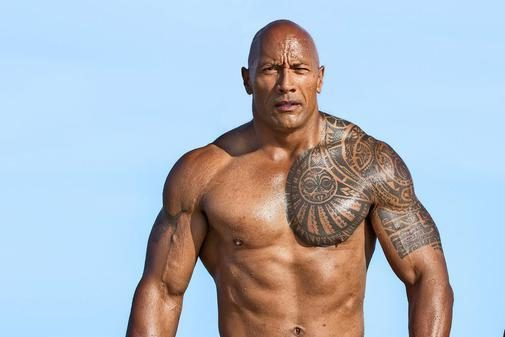
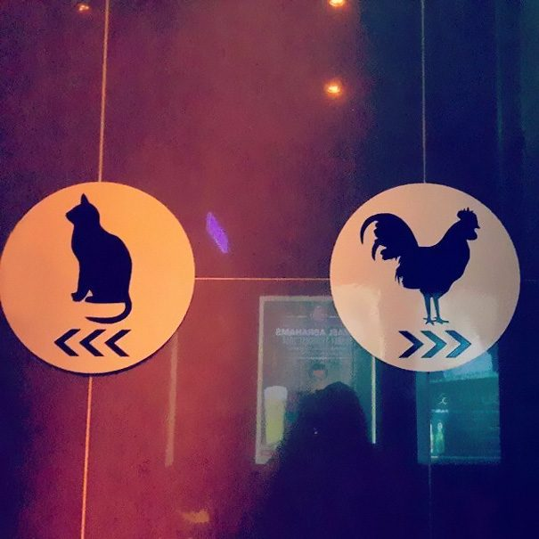
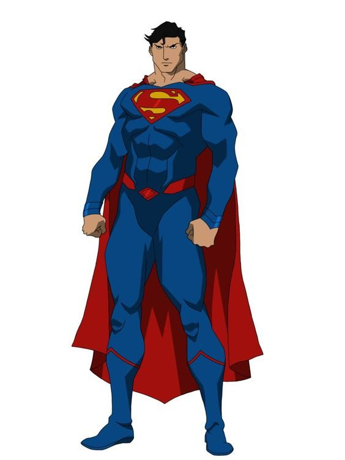
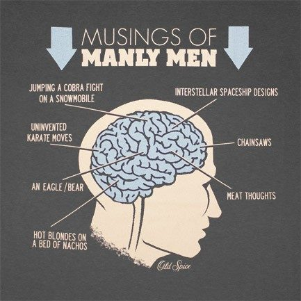

Possible Down Sides Of High Testosterone
The average male adult has approximately 16 times more testosterone that the average female. Criminals, antisocial, and violent people in the world are shown to have very high levels of testosterone, and are usually thrown in jail after their first serious offence. Statistics show how violent people nearly always have high levels of testosterone. This is why the majority of the people in prison are male; because they are more susceptible to antisocial behaviour. Psychopaths are also on the extremely high end of the testosterone distribution. The masculine hormone can also lead to high-risk sexual behaviour, increasing the chance to result in unwanted pregnancy, and possibly, infectious diseases. High-risk sexual behaviour is true whether it is a male or female who has above average levels for their gender.

Testosterone's Influence On Decision-Making
But for the majority of us who have high testosterone, and are not engaging in the above immoralities, how could high testosterone possibly be affecting our decisions? Testosterone doesn’t only relate to criminals and the conduction of illegal behaviour. The hormone can also influence the behaviour in day-to-day people, including decisions made while gambling that may not be favourable. Unfortunately, having an above average level of the hormone plays a part in unfavourable gambling decisions. So what are these bad decisions that are made by gambling that connected to testosterone? Studies using the IGT (Iowa Gambling Test) illustrate how high testosterone is linked to risky and unfavourable gambling decisions. A direction correlation was shown between disadvantageous decisions in the IGT (a.k.a. negative expect value decisions) and the above average testosterone group. The groups with lower testosterone not only made superior decisions, but they also learnt faster. Although this study was limited to 100 rounds, the data is still surprising. Additional rounds would be necessary to demonstrate which group had the best decision making over a longer time period. Luckily, after learning a game like poker, bad decisions such as these can be suppressed (if the player is aware of them).

How Testosterone Influences You
How did testosterone cause these poor decisions? A key factor is a decreased sensitivity to punishment when the hormone level increases; it makes punishment seem not as harmful. This relates to gambling decisions because the more punishment you can tolerate, the less you will worry about losing when placing or calling bets. Not only does it decrease sensitivity to losing, it also increases the desire to win, projecting more value on the potential of winning, than to the risk of losing. This is why they constantly chose from the two decks that had a larger prize, but an even larger punishment. Overall, the two bad decks create an expected negative return when compared with the two good decks. It’s evident that subjects are going off of their predetermined psychological behaviour based on their hormonal levels and not necessarily decisions based on logic. For high testosterone individuals, not only is there an increased desire to win, but also a higher dependency on the reward from winning. Albeit winning is more motivating for them, the rational strategy to get there is actually worse. Furthermore, cortisol is the stress hormone that increases sensitivity to punishment. Cortisol reduces testosterone production which consequently increases punishment sensitivity further.
Testosterone And Learning
High testosterone was shown to negatively affect learning during the 100 rounds that occurred in the IGT. Men and women in the high level category made less improvement to their strategy than the lower level category. The study mentioned above was conducted on male and female students; men were compared with men, and women with women. A similar strategy pattern applied for individual gender tests when comparing the high levels of testosterone to the average levels. This amplifies the point of high testosterone being associated with high-risk behaviour. In general, high testosterone level individuals take more economic risks, and take longer to learn from the punishment of suboptimal decisions. For example: when gamblers are losing money in the casino, the above average testosterone gamblers are slower to adapt to the unprofitable strategy. In fact, over the 100 rounds in the IGT it’s evident that their strategy was getting even worse.

How Hormones Play A Role In Poker
Other than the students, there is another study involving IGT that is worth focusing on. The study involves females only. 50% of the test subjects being administered a dose of testosterone, and the other 50% were given a placebo dose to avoid any biases (for more information see wikipedia on the placebo effect here). The women were not told if they had received the real dose, or placebo dose. The group of women that were given the real dose of testosterone were more likely to pick a disadvantageous strategy, and less likely to learn a better strategy. This shows similar results to the study conducted on students. It is important in both of these studies to group women against women, and men against men to prevent overwhelming natural testosterone biases. Even though women’s testosterone levels average to be one-sixteenth of men’s, the comparison between the high and average level women was very similar to the pattern between the high and average level men groups. Both studies reinforce each others results. They both conclude that the hormone plays a role in gambling decisions. And yes, that includes you - poker players. Be wary of your habits. Your all-in shove could be influenced by a hormonal bias, and not a rational decision. Remember, these studies do not say that a more advantageous strategy could not be learnt, but that it is unlikely across the IGT’s 100 rounds.

Personality Traits And Pathological Gambling
Pathological gamblers have a number of things going on regarding their hormones and personality. They have skewed serotonin levels that have been mutated over time. Low serotonin is connected to depression and other mental illnesses. Doctors will actually be give serotonin as medication for depressed patients. When it comes to testosterone, there is no differences in levels when comparing gambling addicts to non-addicts. This provides some evidence that there is no correlation in the early stages between losing and becoming addicted to gambling, since higher levels of testosterone were losing in the first 100 rounds. Furthermore, neuroticism is one of the five major traits measured in personality tests, and plays a role in gambling addiction. Neuroticism is basically the amount of negative emotion and thoughts you have. Gambling addicts usually always score high in neuroticism; people who have low neuroticism score are unlikely to be gambling addicts. Also, highly neurotic people are much more likely to become depressed compared to those who are ranked moderate or below. They also have trouble dealing with the effects of depression more-so than the general population; this make it quite a dangerous loop to get caught in. If someone is female and has experienced life threats to a certain severity, as well as being neurotic, they are at a very high-risk of being depressed. For this reason it is worth being aware of how neurotic you are to avoid falling into a degenerate gambling cycle.
Conclusion
Lastly, we can look at testosterone and impulsiveness. The hormone is shown to increase the likelihood of being impulsive in an aggressive manner. And many people assume that impulsive aggression is linked to all other forms of impulsivity, but this is not true. Evidence suggests that high testosterone males have an equal level of impulsivity across other areas as the general population. It is more reasonable to separate aggression and impulsivity. Since being more aggressive also means being more aggressive in a impulsive way. Does aggressive behaviour equate to making +EV (positive expected value) decisions at the poker table? Unfortunately not. Aggression may intimidate some players into folding when they shouldn’t, but relying on it as a main strategy is disastrous. For those of you who disagree, go try yourselves ;-).
Biliography
Honk, J., Schutter, D.J.L.G., Hermans, E.J., Putman, P., Tuiten, A., & Koppeschaar, H. (2004). Testosterone shifts the balance between sensitivity for punishment and reward in healthy young women, Psychoneuroendocrinology, 29, 937-943.
Kendler, K.S., Kuhn, J., & Prescott, C.A. (2004). The Interrelationship of Neuroticism, Sex, and Stressful Life Events in the Prediction of Episodes of Major Depression, Am J Psychiatry, 161, 631-636.
Stanton, S.J., Liening, S.H., & Schultheiss, O.C. (2011). Testosterone is positively associated with risk taking in the Iowa Gambling Task, Hormones and Behaviour, 59, 252-256.